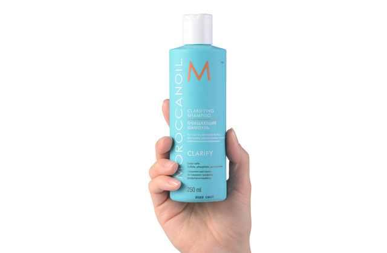
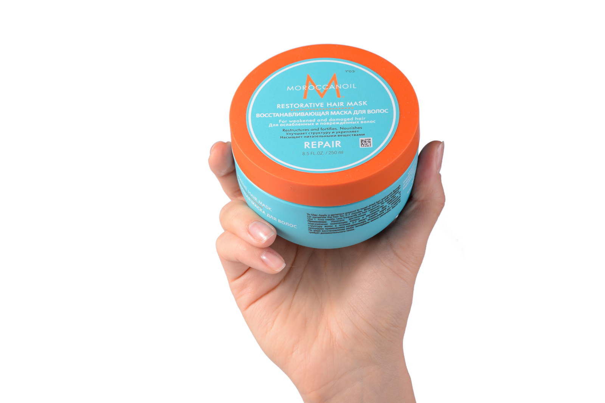
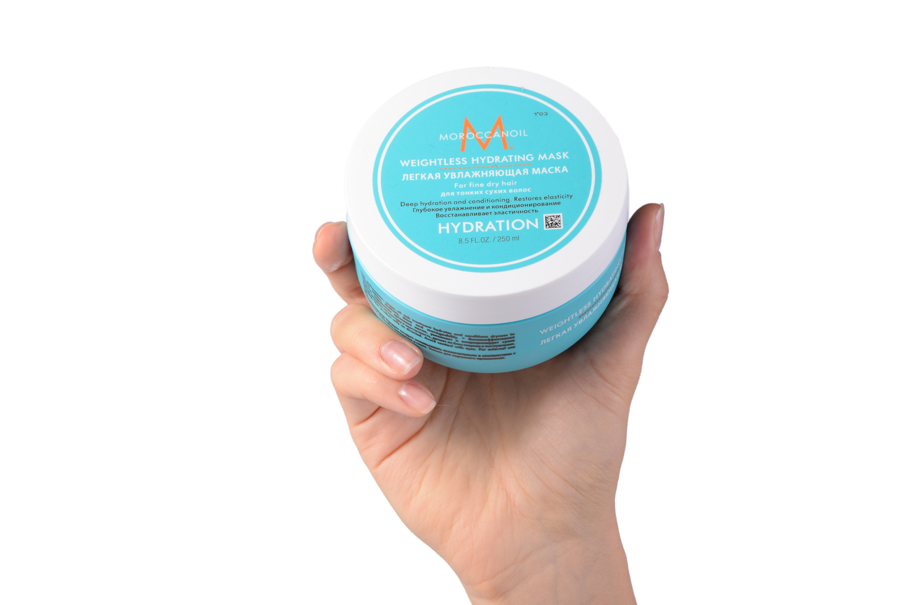
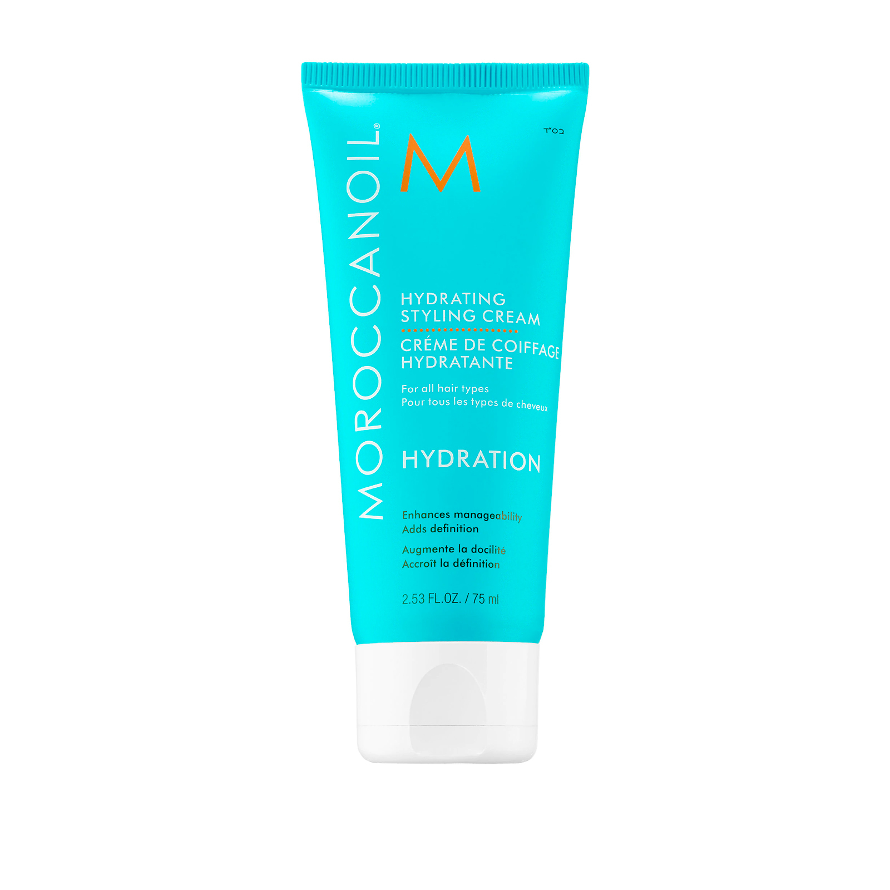

Запишитесь на бесплатную консультацию, и я подберу уход,
полходящий именно Вашим волосам в соответсвии с Вашими пожеланиями и бюджетом.
Роскошные волосы, как у моделей в рекламных роликах – это не мечта, а реальность, которой достойна каждая женщина.
Все, что для этого требуется – периодически баловать волосы салонными процедурами по уходу и лечению.
Позвольте им немного отдохнуть и восстановиться после укладок, окрашиваний, химических завивок и прочих манипуляций.
Хочу Вас познакомить с самой лучшей уходовой процедурой, которая поможет вернуть красоту Вашим локонам.
Вы заметите преображение уже после первой процедуры. Я уверена в результате,
потому что использую в работе только профессиональные средства известных мировых брендов.
Уход за поврежденными волосами в результате окрашивания, термического и химического воздействия на волосы,
применения различных косметических средств требует комплексного и эффективного подхода.
Именно программа от LEBEL «Абсолютное счастье для волос» способна справиться со всеми проблемами
и полностью восстановить структуру волос.
Уже с самого начала использования волосы становятся более здоровыми и красивыми,
а после проведения необходимого курса восстановления к ним возвращается сила, шелковистость и сияние.
Мой фаворит среди уходовой косметики для волос - MOROCCANOIL.
Moroccanoil – израильская косметика для волос на основе арганового масла, доказанная эффективность которой моментально сделала бренд популярным во всем мире.
Основой успеха компании является инновационная формула продукции, которая придает волосам естественную гладкость и блеск,
улучшая их состояние при каждом применении.
Продукты Moroccanoil обогащены антиоксидантами и питательными веществами, обладают безупречным качеством и гарантируют мгновенный видимый результат.
В линейке бренда представлены
средства для всех типов волос.
| Очищающий шампунь Moroccanoil | Восстанавливающая маска Moroccanoil | Увлажняющая маска Moroccanoil | Увлажняющий крем для стайлинга |
|  |  |  |  |